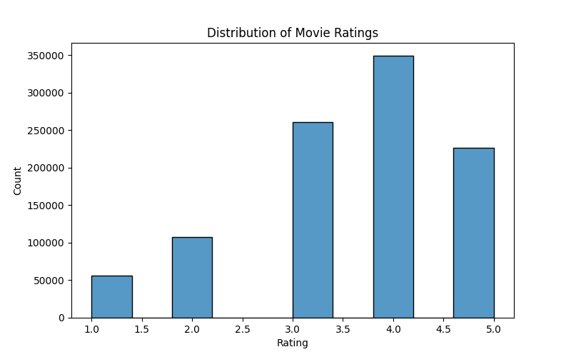
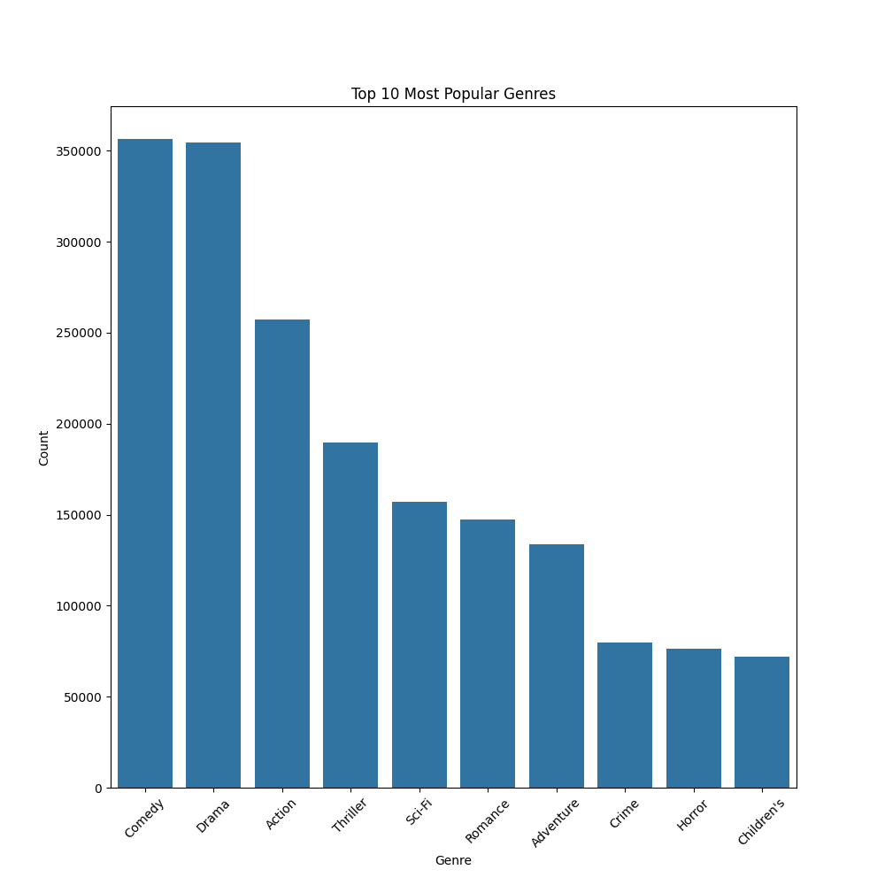

Choosing & Preprocessing the Dataset
For our MVP, we needed a publicly available dataset with user ratings, movie metadata, and watch history. The MovieLens 1M dataset was the perfect fit!
Why MovieLens 1M?
- 1 million ratings from 6,000+ users on 4,000+ movies.
- Includes user demographics (age, gender, occupation).
- Well-structured format, ideal for collaborative & content-based filtering.
Explanation of MovieLens 1M Data Files
The MovieLens 1M dataset consists of several .dat files, each containing different aspects of movie ratings, users, and metadata. Here’s a breakdown of each file:
- Movies.dat
- Purpose: Contains movie metadata such as titles and genres.
- Structure:
movieId::title::genres - Example Data:
1::Toy Story (1995)::Animation|Children's|Comedy
2::Jumanji (1995)::Adventure|Children's|Fantasy
3::Grumpier Old Men (1995)::Comedy|Romance
- Explanation:
movieId → Unique identifier for the movie.
title → Movie name + release year.
genres → Pipe-separated (|) list of genres.
- Ratings.dat
- Purpose: Stores user ratings for movies.
- Structure:
userId::movieId::rating::timestamp - Example Data:
1::1193::5::978300760
1::661::3::978302109
1::914::3::978301968
- Explanation:
userId → Unique identifier for the user.
movieId → Movie being rated.
rating → Score from 1 (worst) to 5 (best).
timestamp → Time when the rating was given (Unix format).
- Users.dat
- Purpose: Contains demographic details of users.
- Structure:
userId::gender::age::occupation::zipCode - Example Data:
1::F::1::10::48067
2::M::56::16::70072
3::M::25::15::55117
- Explanation:
userId → Unique identifier for the user.
gender → M (Male) or F (Female).
age → Encoded in categories
- 1: Under 18
- 18: 18-24
- 25: 25-34
- 35: 35-44
- 45: 45-49
- 50: 50-55
- 56: 56+
zipCode → User’s zip code (mostly U.S.-based).
- tags.dat (Optional)
- Purpose: Stores user-generated tags (e.g., "Funny", "Sci-Fi", "Great Acting").
- Structure:
userId::movieId::tag::timestamp - Example Data:
15::339::dystopia::1138537770
20::1::pixar::1262184809
- Explanation:
tag → Custom text labels added by users for movies.
Useful for NLP-based recommendation systems.
- Occupations.dat (Mapping file)
- Purpose: Provides a mapping of occupation IDs to real-world job titles.
- Structure:
occupationId::occupationName - Example Data:
0::other
1::academic/educator
2::artist
3::clerical/admin
- Explanation:
Used to interpret occupation column from users.dat.
Summary Table
| File | Purpose | Key Columns |
|---|---|---|
movies.dat |
Movie metadata | movieId, title, genres |
ratings.dat |
User ratings for movies | userId, movieId, rating, timestamp |
users.dat |
User demographics | userId, gender, age, occupation, zipCode |
tags.dat |
User-generated tags (optional) | userId, movieId, tag, timestamp |
occupations.dat |
Maps occupation IDs to names | occupationId, occupationName |
Data Preprocessing Steps
Since MovieLens 1M data is split into multiple .dat files, we merged them efficiently:
- Loaded movies.dat, ratings.dat, and users.dat (handling :: separators).
- Merged ratings with movie metadata & user demographics.
- Dropped unnecessary columns (e.g., timestamps).
- Split data into train.csv (80%) & test.csv (20%) for model training.
Analyzing the Data
To gain insights before model training, we explored the dataset using visualizations.
Key Analysis:
- Rating Distribution: Most ratings are between 3.0 and 4.0.
- Most Rated Movies: Identified top movies users engage with.
- Genre Popularity: Determined which genres dominate user preferences.


What’s Next?
Now that we have cleaned & analyzed data, our next steps include:
- Implementing RAG-based retrieval using Sentence-BERT embeddings.
- Training an RL agent to optimize movie recommendations.
- Building an interactive API/UI to test real-time recommendations.
Stay tuned for Part 2, where we integrate Neural Retrieval + RL for dynamic recommendations!
Want to contribute? Check out the repo: CineSense GitHub Repository